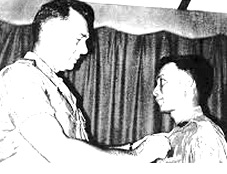

Cuốn sách bạn cầm trên tay là sản phẩm trí tuệ của Đỗ Sơn, nguyên Giám đốc Đài phát thanh VOV, nguyên Chủ nhiệm kiêm Chủ bút tạp chí trào phúng Con Cò. Nếu bạn đã từng quen thuộc với bút pháp giễu cợt, chọc cười, chọc giận của Đỗ Sơn trên tạp chí Con Cò, thì qua cuốn sách mới này, bạn sẽ gặp một Đỗ Sơn khác. Đỗ Sơn trong cuốn sách này là một Đỗ Sơn mực thước, nghiêm cẩn để cùng Chuẩn Tướng Phạm Duy Tất nói lên những sự thật về cuộc triệt thoái Quân Đoàn II mở đầu cho sự sụp đổ của Việt Nam Cộng Hòa.

Chuẫn Tướng Phạm Duy Tất
Là một quân nhân trọng danh, Tướng Tất muốn đem sự thật trả lại cho lịch sử chứ không như một số người có trách nhiệm đã viết sách, viết báo chỉ tay vào người khác để quy trách nhiệm và chạy tội cho bản thân. Nhiều người tin tưởng một cách sai lầm rằng Đại Tá Phạm Duy Tất được móc sao là để lo việc triệt thoái Quân Đoàn II khỏi vùng Cao nguyên. Dù từ ngữ có khác biệt, dù có gọi đó là cuộc triệt thoái, cuộc di tản chiến thuật hay gì gì đi chăng nữa, thì cuộc rút quân khỏi Cao nguyên với những lệnh lạc tiền hậu bất nhất, những lệnh lạc phi lý – ngay cả Tham mưu trưởng Quân đoàn 2 cũng thú nhận là không soạn nổi một lệnh hành quân – phải chăng là đã có những mật ước nào đó để bức tử quân đội Việt Nam Cộng Hòa và bàn giao lãnh thổ, dân chúng, vũ khí cho đối phương. Khi Việt Nam Cộng Hòa ký vào hiệp ước hòa bình ở Paris vào ngày 27 tháng Giêng năm 1973 là đã ký vào bản án tử hình. Biết vậy mà vẫn phải ký. Từ ngày 27/1/1973 đến ngày mất nước 30/4/1975 phải chăng đã có một khoảng cách coi được? Vấn đề Việt Nam đã được giải quyết trên bàn hội nghị và những mật ước chính trị, chứ không phải trên trận địa.
Chuẩn Tướng Phạm Duy Tất là sĩ quan cuối cùng của quân lực Việt Nam Cộng Hòa được lên hàng tướng lãnh. Là một sĩ quan không có gốc lớn, nên sự thăng thưởng của ông diễn tiến đúng theo hệ thống quân giai nên khá chậm chạp. Ông là một tướng chiến đấu, tướng mặt trận chứ không phải tướng văn phòng. Tuy nhiên ông cũng là người ham học hỏi, có tài tổ chức, chăm lo việc huấn luyện binh sĩ, có tầm nhìn chiến lược. Những chiến công oanh liệt của ông ở Pleime, Cô Tô, hang Tức Chụp, Rừng Tràm Trà Tiên, Mộc Hóa, Kampong Trach đã giáng cho đối phương những đòn chí tử. Ông là một sĩ quan hàng tướng lãnh bị Cộng sản Việt Nam cầm tù lâu nhất: 17 năm. Phải chăng Cộng sản Việt Nam báo thù ông về những thất bại ê chề mà ông đã giáng lên đầu bọn đàn em của Võ Nguyên Giáp. Phải chăng Cộng sản Việt Nam vẫn thù hận và gờm cái oai danh của những binh chủng ông từng chỉ huy: Lực Lượng Đặc Biệt, Biệt Động Quân …
Cổ nhân có nói:“ Bại binh chi tướng bất khả ngôn dũng”, ông tướng bại trận không thể nói dũng được. Là một tướng lãnh tự trọng, Tướng Tất đã thủ khẩu như bình suốt 38 năm qua. Tuy nhiên nhờ tài gợi chuyện của Đỗ Sơn cũng như ý thức được sự cần thiết phải trả lại sự thật cho lịch sử để giải tỏa nỗi oan khuất bị bức tử của một đạo quân thiện chiến vào bậc nhất ở Á Châu, cuối cùng Tướng Tất đã lên tiếng bạch hóa tất cả sự thật về cuộc triệt thoái khỏi Quân Khu II của quân dân vùng Cao nguyên. Đó là vì sao cuốn sách này được khai sinh.
Tôi xin ân cần và tha thiết giới thiệu tập tài liệu lịch sử quý giá này tới bạn đọc bốn phương để trả lại sự thật cho lịch sử, để con cháu chúng ta ôn lại bài học lịch sử này để sau này chúng biết hành động sao cho đúng.
Little Saigon, ngày 17 tháng 10 năm 2013
Lưu Trung Khảo